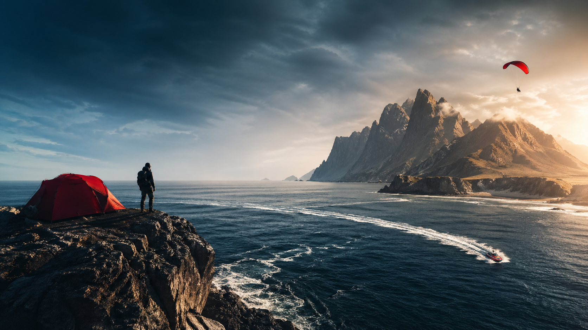

Lo que existe hoy
Diego David, la formación GMN, la historia de primero y el inicio confirmado de segundo. Aprendizajes y evidencias se incorporan cuando se documentan.
Conocer la formación →Águilas · Murcia · España — Mar · Montaña · Aire · Vertical
Una idea de Diego nacida en Águilas para unir aventura, formación, naturaleza y comunidad.
NÓMADA EXTREMO 3.0 · 2.º GMN · Etapa Intermodular 2026-2027
✦ Nómada Extremo es actualmente un proyecto académico no operativo creado por Diego David Gómez García, alumno de 2.º GMN, curso 2026-2027, del IES Europa de Águilas, Murcia. No realiza reservas, cobros ni actividades reales en este momento. ✦
Etapa Intermodular en el IES Europa de Águilas (Murcia). Inicio: .
9 módulos + Fase de Empresa II. Las diez áreas académicas están contempladas; conexiones con el proyecto en desarrollo.
Diego David, la formación GMN, la historia de primero y el inicio confirmado de segundo. Aprendizajes y evidencias se incorporan cuando se documentan.
Conocer la formación →Catálogo, Escuela, reservas simuladas, packs, gestión, material y Logbook. Sistemas de demostración sin servicios comerciales operativos.
Ver cómo se conecta →Base, Campamento, Hangar, flota, viajes e infraestructura. Ideas sujetas a investigación, recursos y validación, sin aperturas anunciadas.
Explorar el horizonte →Experiencia Nómada: equipo propio · Con centro especializado: profesional colaborador habilitado · Horizonte: desarrollo futuro.
Nómada Extremo es grande porque está diseñado como un ecosistema: experiencias, escuela, seguridad, audiovisual, comunidad, logbook, formularios y proyecto académico. La portada te orienta; las páginas profundas demuestran.
Mar, montaña, vertical, aire, buceo, barrancos, BTT, foil y multiaventura.
Ver experienciasFormación, progresión, técnica, material, seguridad y evaluación.
Ver escuelaLínea puntual, respetuosa, privada, natural y no sexualizada.
Ver línea naturistaReels, POV, 360, mini documental, foto y recuerdo con criterio.
Ver audiovisualApp conceptual, historial, XP, insignias, retos y álbum de aventura.
Ver logbookMapa maestro para entender toda la estructura académica y de marca.
Explorar mapaElige lo que buscas y te mostraremos experiencias reales del catálogo que encajan contigo.
La recomendación es orientativa. La viabilidad final depende del nivel, la meteorología y la validación técnica de cada actividad.
La web se organiza como una marca de aventura mediterránea completa: catálogo, seguridad, material, zonas, escuela, comunidad digital, audiovisual, sostenibilidad, grupos, bonos y solicitudes de experiencia.
Índice maestro de aventura, formación, comunidad, gestión, contenido y marca.
Explorar mapaElección, requisitos, solicitud, briefing, formularios, check-in, desarrollo y logbook.
Ver procesoEvaluación previa, material, meteo, ratios, validaciones y criterios de cancelación.
Ver seguridadÁguilas como base y la Región de Murcia como escenario de costa, montaña, agua y aire.
Ver zonasPerfil, XP, insignias, retos, álbum audiovisual, credenciales QR y comunidad no competitiva.
Ver logbookQué aportaría la empresa, qué trae el participante y qué se revisa antes de salir.
Ver materialNo dejar rastro, posidonia, flora, fauna, residuos, grupos reducidos y educación ambiental.
Ver impactoCentros educativos, team building, familias y experiencias privadas en formato a medida.
Ver gruposReservas, pagos, seguros, formularios, menores, experiencia previa y línea naturista.
Ver FAQDoce actividades principales con detalles de nivel, material, riesgos y condiciones.
Ver fichasNo hacemos locuras. Diseñamos aventuras con cabeza.
La adrenalina no consiste en improvisar. Consiste en preparar bien una experiencia intensa para vivirla con seguridad, lectura del entorno, material adecuado y respeto por los límites del grupo. Esta metodología forma parte del proyecto académico y muestra cómo podría estructurarse una operación profesional futura.
Edad, nivel, experiencia, condición física, miedos, expectativas y necesidades especiales.
Meteorología, mar, viento, oleaje, temperatura, accesos, escapatorias, terreno y normativa.
Qué se va a hacer, qué no se va a hacer, cómo actuar, qué material se revisa y qué aporta cada persona.
Ritmo adaptado, comunicación clara, puntos de control, seguridad y disfrute.
Fotos, vídeo, POV o 360 si procede, siempre sin entorpecer la seguridad.
Resumen de la experiencia, aprendizajes, valoración y recuerdo final.
Feedback del grupo, revisión interna y ajustes para futuras actividades.
Método base de diseño y organización: seguridad, lectura del entorno, material adecuado, límites del grupo y mejora continua antes que improvisación.
Primer contacto con mar, montaña, kayak, snorkel, senderismo o movilidad outdoor.
Rutas largas, BTT, ferratas sencillas, travesías costeras y técnica básica.
Cuerda, vertical, barrancos, buceo, orientación, meteo y material específico.
Alta exposición solo con validación, permisos, especialistas y condiciones favorables.
Planes suaves para familias, parejas, cumpleaños y primeras aventuras compartidas.
Privados, amanecer, atardecer, reportaje audiovisual y grupo reducido.
Aprender antes de apretar: técnica, seguridad, entorno y progresión.
Kayak, snorkel, SUP, buceo, coasteering y costa mediterránea.
Senderismo, trekking, BTT, orientación, fotografía y rutas de cresta.
Parapente, paramotor, paratrike y vuelos panorámicos sujetos a meteo.
Vía ferrata, escalada, rápel, cuerda, puentes y exposición controlada.
Agua, roca, cuerda, caudal, accesos y lectura técnica del entorno.
Reel, POV, 360, dron cuando proceda, foto y recuerdo familiar.
Material técnico indicado, revisión, briefing, organización de grupo y criterio de seguridad.
Ropa adecuada, agua, protección solar, calzado, documentación y medicación personal si procede.
Meteo, accesos, permisos, ratios, condiciones del entorno, nivel y alternativas.
Planes suaves para familias, parejas, cumpleaños y primeras veces con edad adecuada.
Privados, amanecer, atardecer, reportaje audiovisual, pareja, familia y grupos reducidos.
La diferencia no está en hacer algo peligroso. Está en convertir una experiencia intensa en algo preparado, medido y memorable.
Muchas aventuras se pueden disfrutar todo el año. La estación orienta el plan; el mar, el viento, la temperatura y el nivel del grupo deciden el mejor momento.
Kayak y SUP en aguas resguardadas, snorkel y buceo con protección térmica, y formación acuática cuando el mar y la temperatura acompañan.
Senderismo, trekking, orientación, BTT, escalada, rápel, vías ferratas, barrancos secos y bushcraft en jornadas de tiempo estable.
Parapente, paramotor, paratrike y paracaidismo en ventanas meteorológicas adecuadas. Técnica, seguridad, material y progresión en la Escuela Nómada.
Kayak, SUP, snorkel, buceo, coasteering, e-foil y primeras sesiones de surf. Wingfoil, windsurf y kitesurf según viento y nivel.
Senderismo, trekking, BTT, escalada, ferratas, rápel, espeleología, rafting y barrancos acuáticos con caudal y accesos adecuados.
Parapente, paramotor, paratrike y paracaidismo según condiciones. Packs de mar y montaña, formación, fotografía y salidas de grupo.
Kayak al amanecer o al atardecer, SUP, snorkel, buceo, coasteering, surf, e-foil y jetsurf. Wingfoil, windsurf y kitesurf con viento adecuado.
Senderismo temprano, rutas al atardecer, BTT y orientación evitando las horas de calor. Escalada en sombra, espeleología, rafting y barrancos acuáticos aptos.
Parapente, paramotor, paratrike y paracaidismo cuando las condiciones lo permiten. Multiaventura, escuela, salidas naturistas y recuerdos audiovisuales.
Kayak, SUP, snorkel, buceo y coasteering mientras la temperatura y el mar acompañan. Surf y deportes de viento según oleaje, viento y nivel.
Senderismo, trekking, BTT, escalada, vías ferratas, rápel, espeleología, vivac y bushcraft. Barrancos y rafting tras revisar lluvia y caudal.
Parapente, paramotor, paratrike y paracaidismo en ventanas de tiempo estable. Progresión técnica, packs combinados y salidas fotográficas.
Las salidas de aire, agua y vertical se ajustan a las condiciones del día y al criterio del especialista. Siempre hay una alternativa para adaptar la experiencia.
Historia breve, voz de experiencia, ritmo y recuerdo con valor real.
Formatos ágiles para redes, casco, manillar, agua o grupo familiar.
Miniatura, teaser, tráiler, fotos editadas, clips y carpeta organizada.
"No somos una empresa de actividades. Somos una cultura de aventura con identidad propia."
Nómada Extremo nace en Águilas, Murcia. Una tierra que tiene el mar delante, la montaña detrás y el cielo siempre abierto. Pocas ciudades en España ofrecen un entorno natural tan completo y tan genuino.
La marca nace desde la visión personal de Diego David Extremo: unir tierra, mar, aire y vertical con formación técnica, digitalización inteligente y una comunidad que crece desde los valores compartidos. Esa visión se estructura con Nuria P. F. como figura clave en la dirección financiera, la viabilidad económica, la coordinación interna y la gestión de compras de materiales necesarios para cada actividad.

Sin artificios. Experiencias genuinas diseñadas por quienes las viven en primera persona.
La adrenalina no está reñida con el rigor técnico. Aquí la seguridad es innegociable.
Digitalización real: logbook, credenciales y app para la aventura del siglo XXI.
Nómada Extremo nace en Águilas, donde el Mediterráneo se mezcla con calas, acantilados, senderos, ramblas, montaña y costa salvaje. Desde esta base diseñamos experiencias de buceo, snorkel, kayak, paddle surf, coasteering, cliff jumping controlado, senderismo, BTT, paramotor y paratrike.
Para las actividades más técnicas, ampliamos el mapa hacia Sierra Espuña, el Cañón de Almadenes, Calasparra, Cieza, Ricote, Mazarrón, Cabo de Palos, el Mar Menor, Totana y Mula.
Diez grandes familias de experiencias organizadas por medio, nivel y espíritu. Todas con la Garantía Nómada Extremo.
Sierra Almenara, Cabo Cope, Sierra Espuña. El territorio como maestro.
Descubrir →Roca, cuerda, altura y profundidad con técnica de primer nivel.
Descubrir →El litoral de Águilas, uno de los más espectaculares del Mediterráneo.
Descubrir →El Mediterráneo visto desde dentro. Progresión SSI completa.
Descubrir →Del primer salto al vuelo autónomo. El cielo de Águilas, incomparable.
Descubrir →Agua, roca, gravedad y adrenalina en estado puro.
Descubrir →Costa, montaña y sendero técnico. Ruedas sobre el mejor entorno.
Descubrir →El verdadero ADN Nómada Extremo. Disciplinas que crean algo único juntas.
Descubrir →La línea más técnica del mar: motor eléctrico, viento, tabla y control real.
Descubrir →Experiencias suaves y diferenciadas, con consentimiento, privacidad y normas claras.
Descubrir →Rutas guiadas por Cabo Cope, Marina de Cope y Sierra de Almenara. Interpretación del paisaje y fauna local. Para todos los públicos, sin experiencia previa.
Calas inaccesibles por tierra, solo desde el mar. Travesías de 2 a 4 horas con parada para snorkel. El litoral de Águilas en su máxima expresión.
Teoría, piscina e inmersión guiada a hasta 6 metros. Sin experiencia previa. Fauna mediterránea, posidonia y la sensación de un mundo nuevo.
4.000 metros. 60 segundos de caída libre a 200 km/h con instructor certificado. Planeo sobre el Mediterráneo. Sin experiencia previa.
Senderismo por crestas costeras, kayak de travesía y snorkel en calas vírgenes. Almuerzo mediterráneo incluido. El sello Nómada Extremo en estado puro.
Vuelo ultraligero motorizado sobre la costa murciana. Una de las líneas más especiales del catálogo, completamente viable en Águilas. Vistas que cambian perspectivas.
Esta zona permite imaginar cómo recoger valoraciones con consentimiento, revisión editorial y prueba social clara.
"El paracaidismo tándem fue la experiencia más brutal de mi vida. El equipo te prepara bien, el entorno de Águilas es espectacular y el vídeo que me dieron fue cinematográfico de verdad. Volveré."
"Hice el Open Water SSI en tres días con la instructora. Su paciencia, el fondo marino de Águilas y la forma en que organizan todo desde el formulario previo hasta el check-in lo hace muy serio. Recomendado 100%."
"El pack de ferrata + kayak de regreso fue increíble. Salimos siendo cuatro amigos sin experiencia y llegamos como si lleváramos años haciendo esto. El guía se nota que conoce cada centímetro de esas paredes."
"El e-foil fue una sesión épica. El instructor explica con mucha paciencia y las condiciones en Águilas ese día eran perfectas. Me esperaba que fuera mucho más difícil. Estoy enganchada."
"Reservé una jornada de barranquismo acuático para mi cumpleaños y fue un éxito total. La organización fue perfecta: formulario previo, punto de encuentro claro y el guía cuidando cada detalle de seguridad."
"La ruta de kayak al amanecer fue justo lo que esperaba: tranquila, bien explicada y con un ritmo cómodo. La parte audiovisual quedó como recuerdo perfecto para enseñar a la familia."
"La aventura no es lo que haces. Es cómo decides estar en el mundo: atento, humilde, presente y completamente vivo."
Diego David Extremo · Fundador de Nómada Extremo · Águilas, Murcia
La Escuela Nómada es el corazón formativo del proyecto. Aquí la aventura se convierte en conocimiento, progresión técnica y credenciales de aprendizaje para explicar una escuela seria.
Open Water, Advanced, AFF, Parapente, Paramotor, Ferratas, Rápel, Técnicas de montaña. Progresión trazable y documentada con logbook digital.
Ver la Escuela Nómada →Open Water hasta Divemaster. Progresión certificada en el litoral murciano.
Del salto tándem al vuelo autónomo. Progresión seria y real.
Escalada, ferratas, rápel. Técnica progresiva con guía titulado.
Orientación, meteorología, bushcraft, supervivencia. Saber estar.
Diseña tu solicitud en minutos, revisa requisitos y recibe una respuesta clara para preparar la experiencia.
✓ Kayak de mar 3 horas
✓ Snorkel de aventura
✓ Senderismo costero
✓ Almuerzo mediterráneo
✓ Senderismo + Kayak + Snorkel
✓ Vía ferrata (medio día)
✓ Bautismo de buceo
✓ 2 noches alojamiento rural
✓ Parapente biplaza
✓ Paramotor o Paratrike
✓ Recogida y transporte
✓ Vídeo GoPro incluido
En Nómada Extremo no existe el monitor todoterreno. Cada disciplina tiene su especialista de referencia, su material, su lectura del entorno y su forma de preparar al grupo.
Plantilla Nómada
Experiencia NómadaTécnico Deportivo en Media Montaña y Técnico Deportivo en Escalada
Guía rutas de montaña y prepara al grupo. Coordina escalada, ferratas y rápel técnico con un centro especializado colaborador.
Material y sistemas revisados, ratios adaptados, control meteorológico y plan de evacuación.
Guía rutas de montaña y prepara al grupo. Coordina escalada, ferratas y rápel técnico con un centro especializado colaborador.
Técnico Deportivo en Media Montaña y Técnico Deportivo en Escalada
El título de Técnico Deportivo en Escalada y Media Montaña acredita formación específica para guiar, enseñar y gestionar actividades en montaña con criterios técnicos y de seguridad. La formación en autorrescate, instalación de reuniones y progresión por cuerda permite actuar en situaciones complejas en pared, ferratas o rápeles. Los primeros auxilios en zonas remotas refuerzan la capacidad de respuesta cuando una actividad se desarrolla lejos de asistencia inmediata.
Revisión previa de material, ratios por dificultad, plan de evacuación, control meteorológico, protocolos de incidente en pared, comprobación cruzada de sistemas y adaptación de la actividad al nivel real del grupo.
Centro especializado colaborador
Con centro especializadoInstructor SSI (Open Water Instructor o superior) y React Right
Imparte bautismos y cursos SSI, guía inmersiones y prepara el briefing de seguridad.
Briefing, control de aire y profundidad, parejas, oxígeno de emergencia y revisión del mar y del equipo.
Imparte bautismos y cursos SSI, guía inmersiones y prepara el briefing de seguridad.
Instructor SSI (Open Water Instructor o superior) y React Right
SSI Open Water Instructor es la referencia formativa para enseñar buceo recreativo dentro de su ámbito. React Right aporta formación en respuesta a emergencias. Se verifican la habilitación vigente, el centro, los seguros y los protocolos antes de cada experiencia.
Briefing completo, control de consumo de aire, flotabilidad, profundidad, parejas de buceo, plan de emergencia, botiquín, oxígeno, revisión del equipo, análisis del estado del mar y supervisión constante durante toda la inmersión.
Centro especializado colaborador
Con centro especializadoInstructor de vuelo libre y paramotor habilitado; instructor tándem de paracaidismo con licencia en vigor
Coordina vuelos y saltos, evalúa la meteorología y valida la preparación del pasajero.
Viento, zonas de despegue y aterrizaje, material y pasajero validados. Se aplaza si no hay margen seguro.
Coordina vuelos y saltos, evalúa la meteorología y valida la preparación del pasajero.
Instructor de vuelo libre y paramotor habilitado; instructor tándem de paracaidismo con licencia en vigor
La formación como instructor de parapente, paramotor y paratrike acredita capacidad para enseñar progresión de vuelo, control de vela, despegues, aterrizajes y seguridad aérea. La habilitación biplaza permite realizar vuelos con pasajero. La formación SIV trabaja la simulación de incidencias en vuelo, como plegadas o maniobras de recuperación, en un entorno controlado. USPA Coach/AFF está relacionado con la formación en paracaidismo, especialmente en progresión de alumnos y saltos supervisados.
Decide la viabilidad de cada actividad según viento, rachas, térmicas, zona de despegue, aterrizaje, peso del pasajero, material, experiencia previa y margen operativo. Si las condiciones no son claras, la actividad se aplaza.
Plantilla Nómada
Experiencia NómadaTécnico Deportivo en Piragüismo o monitor de kayak de mar, y socorrista en medio acuático
Guía kayak de mar, paddle surf y snorkel, interpreta el litoral y adapta las rutas al grupo. Coordina el coasteering con un centro especializado colaborador.
Viento, oleaje, corrientes y salidas revisados; flotación, comunicación y regreso alternativo preparados.
Guía kayak de mar, paddle surf y snorkel, interpreta el litoral y adapta las rutas al grupo. Coordina el coasteering con un centro especializado colaborador.
Técnico Deportivo en Piragüismo o monitor de kayak de mar, y socorrista en medio acuático
La formación como guía de kayak de mar e instructora SUP acredita conocimientos para dirigir actividades en entornos costeros, controlar grupos y adaptar la ruta al nivel del participante. El socorrismo acuático y el rescate en aguas abiertas son claves para actuar ante caídas, fatiga, corrientes o problemas durante la actividad. La navegación costera y la meteorología marítima permiten interpretar viento, oleaje, accesos, puntos de salida y cambios de condiciones en el mar.
Análisis de viento, oleaje, corrientes, accesos, salidas del agua, puntos de escape, temperatura, nivel del grupo, material de flotación, comunicación y alternativas de regreso.
Una propuesta puntual, filosófica y completamente diferente. Un día al mes en entornos seleccionados, con claridad total, respeto absoluto y conexión genuina con la naturaleza.
Conocer la línea naturista →Regalar Nómada Extremo es regalar una historia. Un recuerdo que queda. 12 meses de validez, canje por cualquier actividad.
Senderismo, kayak, snorkel o bautismo de buceo. La primera aventura de alguien especial.
Ver bono →Para jornadas completas y packs combinados. El favorito para regalar en cumpleaños y ocasiones especiales.
Ver bono →Para paracaidismo, paramotor, packs premium o cursos de la Escuela Nómada.
Ver bono →"La adrenalina dura segundos. El vídeo dura para siempre."
Insta360 X5, DJI Osmo Action 6, GoPro MISSION 1 PRO, Insta360 GO Ultra, dron 4K estabilizado y FPV sujeto a normativa AESA. Packs desde recuerdo familiar hasta producción tipo documental corto.

Las ideas, tecnologías, alianzas y sueños que podrían definir las próximas décadas de Nómada Extremo, ordenados con criterio y sin presentar como reales acuerdos o recursos que todavía no existen.
Explorar Horizonte NómadaEl litoral de Águilas esconde senderos que conectan calas vírgenes, puntos geológicos únicos y miradores que te dejan sin palabras.
El Mediterráneo no es el Mar Rojo, pero tiene su propia magia. Posidonias, pecios y fauna local te esperan a pocos metros.
Orografía, clima y espacio abierto. Águilas tiene las condiciones ideales para el vuelo motorizado ultraligero.
Contacto de referencia para el proyecto: solicitudes, dudas, colaboraciones, escuela, audiovisual, grupos y experiencias privadas.
Lunes a domingo · 8:00–21:00 · Águilas, Murcia